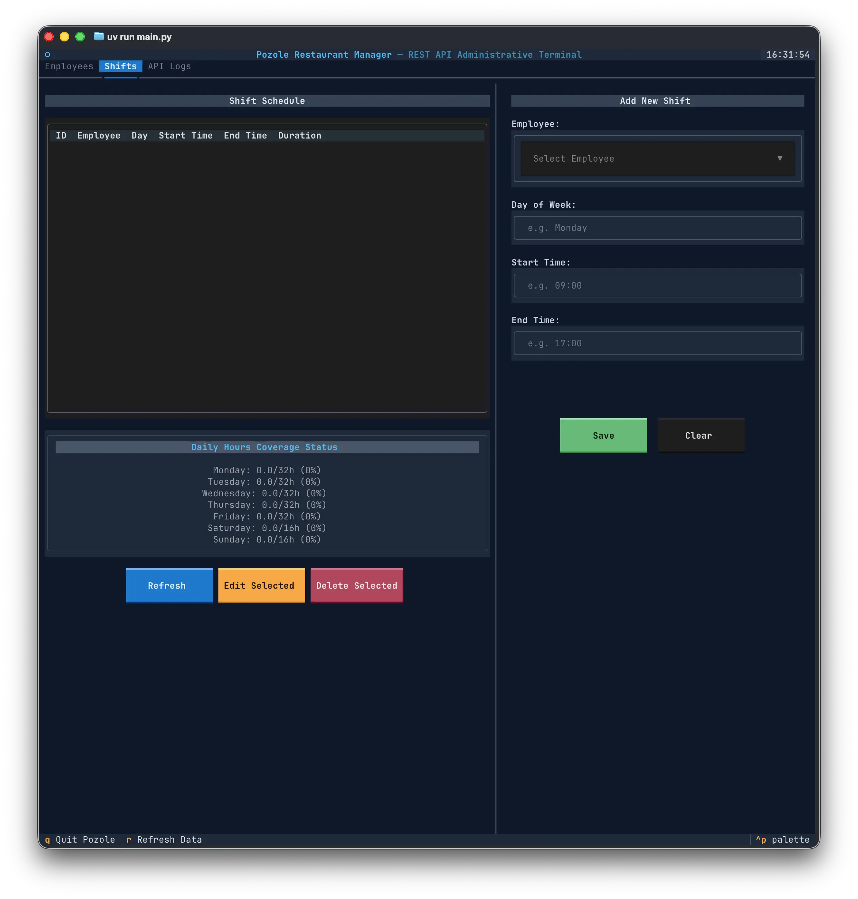
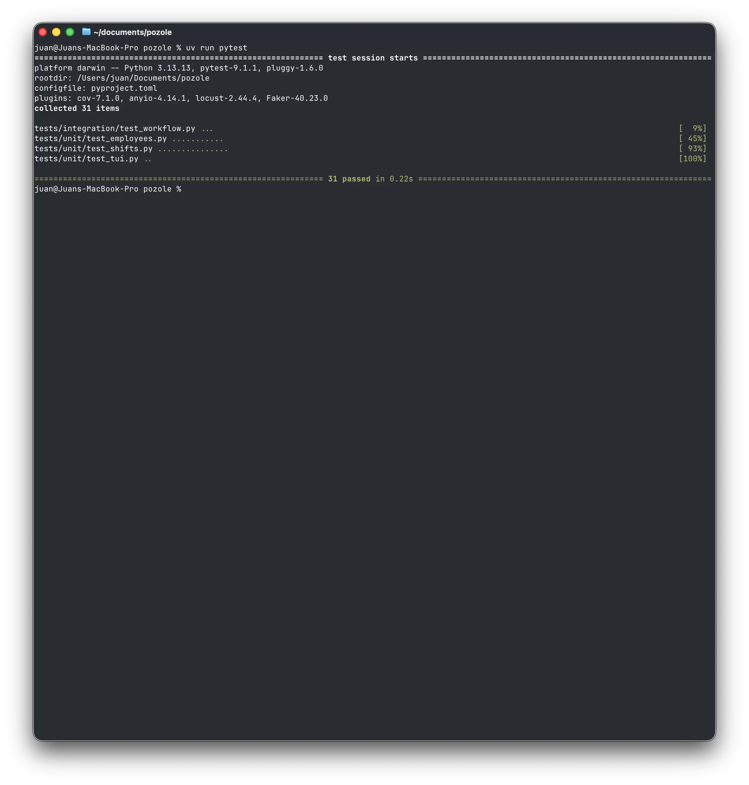
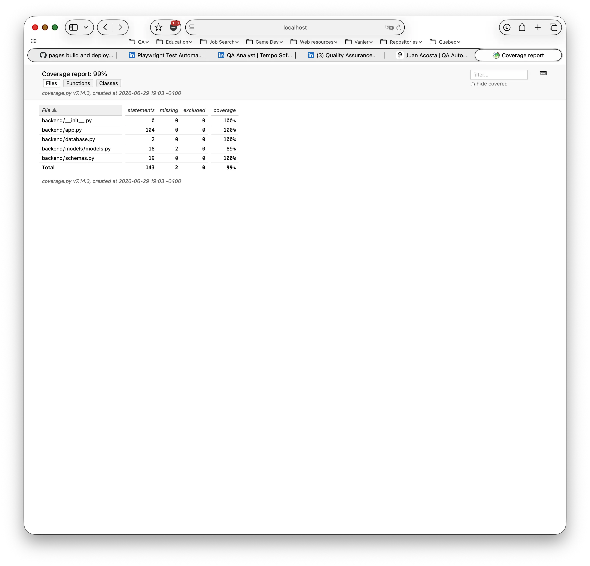
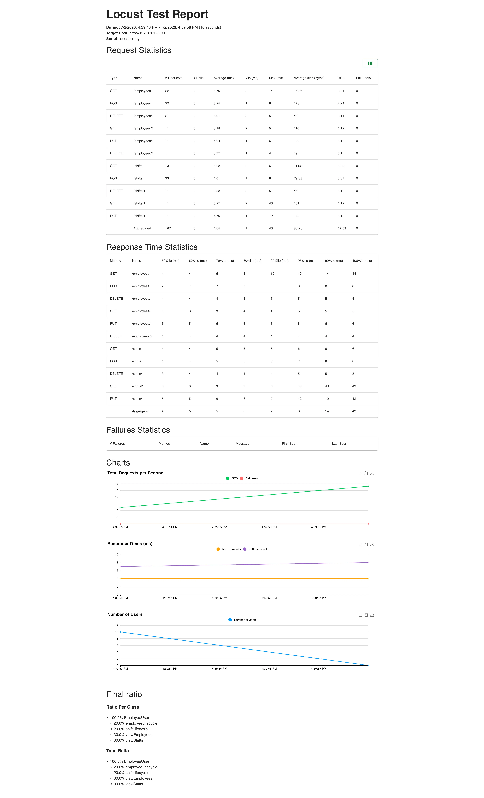

Pozole
Flask REST API QA Automation Showcase

Tech Stack
Application
Testing
Quality & CI
Environment
Why I Built This
Restaurant scheduling sounds simple until dozens of employees, overlapping shifts, and scheduling rules begin interacting. Instead of focusing only on CRUD operations, I treated the API as a production backend where incorrect data could create operational problems. The objective was to build a testing strategy that verifies business rules, protects database integrity, and ensures every endpoint behaves consistently as the application evolves.
Project Details
A REST API built to manage employee schedules and shift assignments for a restaurant workflow system. The project demonstrates how automated testing can validate business rules, API reliability, database integrity, and backend performance in a production-style Flask application.
My Role & Focus
I designed and maintained the complete QA strategy for the API, covering business logic validation, database integrity, automated endpoint testing, smoke testing, performance testing, continuous integration, and code quality enforcement.
Key Achievements
- Achieved 99% automated test coverage across the API's core backend functionality.
- Validated CRUD operations, scheduling rules, and database constraints through automated testing.
- Performed load testing with Locust, confirming a stable 4ms average response time with no failures.
- Integrated CI pipelines using GitHub Actions to enforce automated testing on every push.
- Configured Ruff and Lefthook to enforce consistent code quality before every commit.
What I tested — and why it mattered
| Test Type | Tool | What I Tested |
|---|---|---|
| Business Logic | pytest | Scheduling rules, employee assignments, validation logic, serialization, and database models to ensure business rules remain consistent under different scenarios. |
| API Validation | pytest + Requests | REST endpoints, CRUD operations, HTTP status codes, request validation, and response payloads to verify reliable API behavior. |
| Critical API Health | pytest | Smoke tests verify that the API starts successfully, core endpoints respond correctly, and critical services remain operational after every deployment. |
| Backend under load | Locust | Concurrent clients perform scheduling operations while measuring response time, stability, and failure rate under sustained traffic. |
Proof, Not Just Claims
Screenshots from the actual test runs — the terminal output, the coverage report, and the load test dashboard behind the numbers above.


